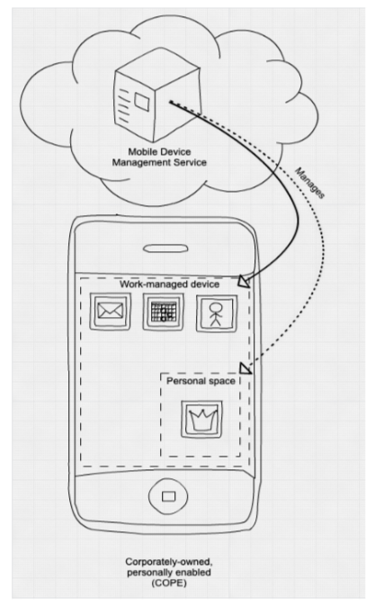
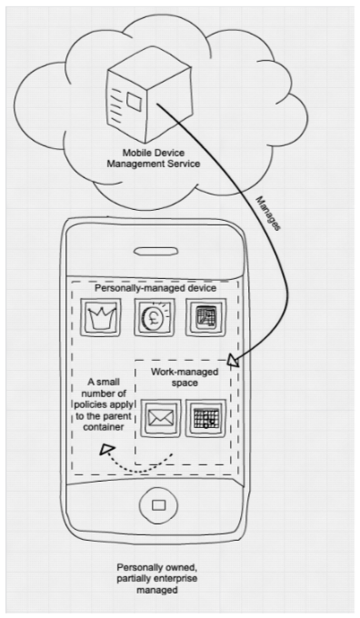
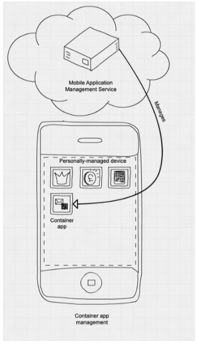
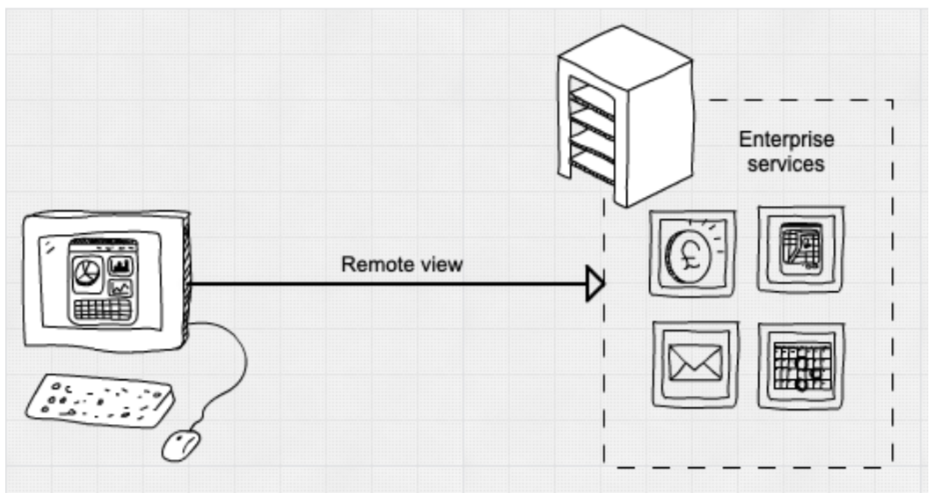

Overview of BYOD best practice
Objective
Outline guidance and approach for local authorities considering a ‘Bring Your Own Device’ (BYOD) approach. It describes the key security issues you’ll need to consider in order to maximise the advantages of BYOD, while also minimising the risks.
What BYOD means
- BYOD refers to a policy of permitting employees to bring personally owned devices (laptops, tablets, smartphones, etc.) to work, and to use those devices to access privileged company information and applications.
Why use BYOD?
- BYOD empowers employees to work and collaborate the way they prefer, with the freedom to use a device with which they are familiar.
- The user will be familiar with the device and will be saved the trouble of carrying both work and personal devices.
- It can minimise overheads for the business relating to procurement and provisioning.
Proportionate security controls and monitoring of these devices must be implemented if they are to be adequately secured.
Containerised application approach
- Instead of allowing corporate software to be installed on a BYOD computer, you may wish to consider deploying apps in containers.
- Containerisation is defined as a form of operating system virtualization, through which applications are run in isolated user spaces called containers, all using the same shared operating system. Containerisation bundles the application code together with the related configuration files, libraries, and dependencies required for it to run.
- BYOD is all about the user’s phone, the user’s tablet, the user’s pictures — it’s all about the user. Containerisation is about establishing a democratic governance between the user and the company.
Containerisation approach is further described in a later in this document.
How to implement on phones & tablets
Corporately owned/managed, personally enabled

- The recommended way to enable personal use of work devices is to take full enterprise control of the device, then allow personal use for the cases you’re happy with, in a manner you approve of.
- This mode can also be applied to personally owned devices where the organisation takes on a full device management role.
- Both Android and iOS provide ways to achieve a COPE setup natively. However, both require you to wipe the device before you can put it into this mode.
- In these modes, you can enable whatever policies and monitoring the platform supports.
How to implement on phones & tablets
Personally owned, partially enterprise managed

- You can also use a management mode which provides less control to your organisation, but does not require the device to be wiped.
- This is a more risky approach because you have less control over each device.
- These modes let you enforce some device-wide configuration policies, as well as policies which protect corporate data within apps, or managed accounts.

- Some of the stronger security policies will not be available, so you may be unable to mitigate certain risks you care about. For example, you will not be able to prevent users from installing new configuration profiles on iOS in this mode, which can change security settings of the device.
How to implement on phones & tablets
Personally owned, with managed container application

- Some third-party vendors also provide container applications, where users are expected to perform work-related tasks within a single application provided by one vendor. These can be managed using Mobile Application Management (MAM).
- In general, whilst a container application approach provides less control of whole device settings, it tends to offer stronger controls to protect and isolate corporate data from the user’s personal applications. For example, it can prohibit copy and paste actions across the container boundary.

- Container apps also allow for some monitoring of the device, including checking operating system versions.
- Some users may view the container approach as having worse usability than the native BYOD technologies. For example, users generally won’t be able to use a platform’s built-in Mail and Calendar apps. Some users may appreciate the clear separation of personal and work spaces created by the container approach.
How to implement on laptops & desktops
Bootable managed operating system

- One approach for reducing risk is to boot the users’ device into a managed environment using bootable media, typically USB.
- There are a variety of third-party products that can do this, as well as Windows to Go, which is built into Windows.
- This approach is arguably the lowest risk way of enabling home PCs to be used, but is still vulnerable to firmware attacks on the host device. You may need to reconfigure the device’s firmware to enable booting from removable media.
Remote desktop or remote apps

- There are a variety of products that enable users to connect to a remote view of a desktop, or applications running on a remote server. They enable users to work remotely but are still vulnerable to malware that may be present on the users device, which can scrape content as the user accesses it.
These ‘thin client’ services are less risky than ‘thick client’ services as they:
Provide limited access to corporate data for any malware on the device - it can only screen scrape and key log to access data.
Effectively prevent downloading of bulk enterprise data as the files themselves are not exposed.
Require minimal amounts of data to be stored on the endpoint, so loss or theft of devices is less problematic.
How to Implement on laptops & desktops
Web access to work data

- You may consider allowing personal devices to access corporate data through a web browser. This is typically used to enable employees to access work email using their personal PCs and tablets.
- This is a particularly risky approach, as you cannot get any confidence in the security or configuration of the device. There are no technical controls you can enforce to reliably prevent data loss or access from insecure or out-of-date devices, so this approach gives rise to the most technical risk. For example using the OneDrive client on a personal device leaves a copy of the data on that device (which can also be duplicated elsewhere locally) thus causing a potential security issue if the machine is compromised.
Considerations when implementing
Increased support costs
- the need to support a greater number of device types and operating system variants
- responding to security incidents across a variety of devices and operating systems
Increased reliance on procedural controls
- people often approach security differently when using their own device rather than a corporately owned laptop or PC
- regular audits of the business data stored on devices and accessible to devices will be required
- when staff leave your organisation or replace their device, you should ensure all business data is verified as having been removed and credentials to access business systems are revoked
Potential legal issues
- responsibility for protecting personal information rests with the data controller, not the device owner
- as such, you should read the ICO’s BYOD Guidance and be aware of laws relating to your business data, in particular:
- The Data Protection Act (DPA 2018),
- The Employment Practices Code, which states that employees are entitled to a degree of privacy in the work environment,
- Note that since Brexit the provisions of the EU GDPR have been incorporated directly into UK law and are now covered under the DPA.
- The Data Protection Act (DPA 2018),
Suitability of devices for BYOD
- Your BYOD policy must specify what devices you are prepared to accept. For example:
- Smartphone and Tablet OS’s including iPhone (iOS), iPad (iOS) and Android devices are allowed (the list should be as detailed as necessary including models, operating systems, versions, etc.).
- Apple Mac Computers (OSX) and Windows Computers should be ‘modern’ - ie at a supported level of OS.
- Rooted (Android) or jailbroken (iOS) devices are strictly forbidden from accessing the network. (Airwatch can detect such devices)
- Smartphones and tablets that are not on the company’s list of supported devices are/are not allowed to connect to the network. E.g. Blackberry and Windows
User behaviours with BYOD
Your BYOD policy should cover the different types of users in your organisation and the different jobs they undertake. -For example Finance staff are likely to have a different set of access and usage requirements to, say, Parks and recreation staff.
Users should be advised that they may be blocked from accessing certain websites during work hours/while connected to the corporate network, at the discretion of the company.
Users (not the company) are responsible for ensuring their devices are running the latest Operating System (and patch/update level) for their hardware type.
Users (not the company) are responsible for ensuring that their devices have a suitable AntiVirus/AntiMalware product installed and it is kept up to date.
Multi factor authentication
NCSC Guidance on MFA explicitly states that “All users, including administrators, should use multi-factor authentication when using Cloud and Internet-connected services. This is particularly important when authenticating to services that hold sensitive or private data.” and “Administrators should, wherever possible, be required to use multi-factor authentication” when using any service.
MFA should be applied to all users irrespective of whether they are using a Corporate or personal device.
Further info on MFA can be found here
Conditional access policies
By using Conditional Access policies, you can apply the right access controls when needed to keep your organization secure and stay out of your user’s way when not needed irrespective of whether they are using a corporate device or their personal devices.
Microsoft have developed their own MAM (Mobile Application Management) solution within Microsoft 365 called Intune App Protection or Intune APP. It is ideal if you need to secure data in the Microsoft Apps for Enterprise suite including Outlook, Teams, Office and Edge.
Users can enroll devices into Intune MDM (Mobile Device Management) to receive device-level policies, which are another option to evaluate conditional access criteria.
Further info on CAPs can be found here
Microsoft has published a technical guide which provides BYOD access patterns for Office 365
Google has provided guidance to help IT admins safely use BYOD in G Suite
Reasons not to implement
IT dept is not able to adequately manage security on user devices. …
Employee behaviour is too unpredictable on own devices. …
Unanticipated jumps in costs (software licensing, security tokens, etc). …
It creates bumps in the playing field. …
The risk of data loss for both sides (Unless data loss policies are implemented corporate data is at risk, and if a device is legitimately remote wiped users personal data may be lost).
Licenses and legalities (consider GDPR, data loss fines).
Employees may not have effective antivirus software, firewalls, or other specialized security software installed on their devices.
Devices used by employees are vulnerable to theft, loss, or damage.
Employees often work at outside Wi-Fi locations that are not secure and are vulnerable to attack by others.